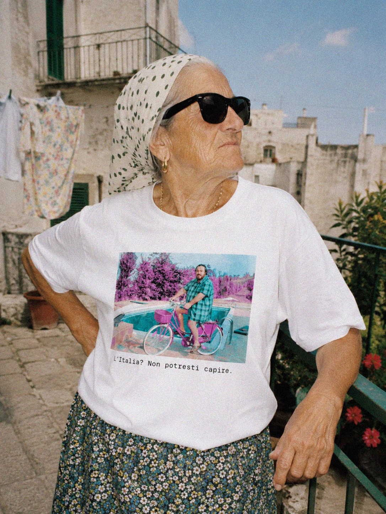
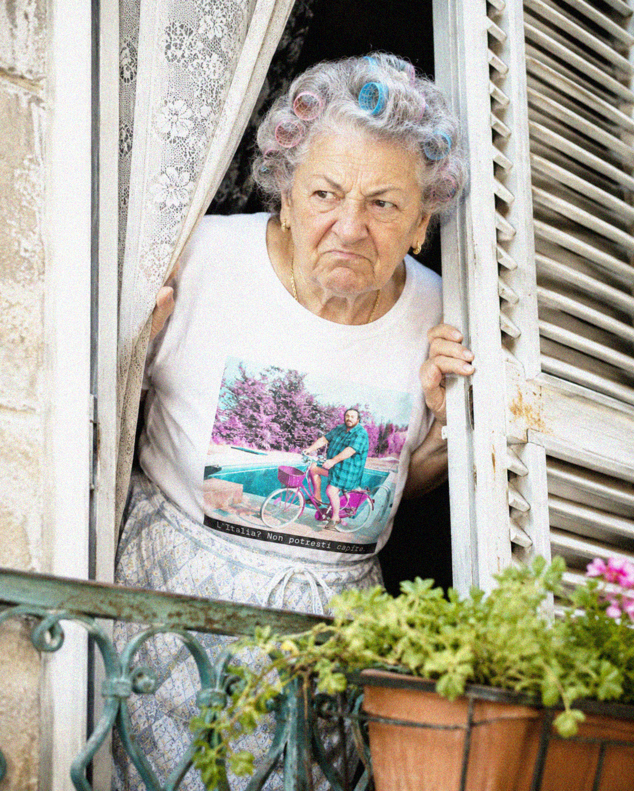

ABOUT
Inspired by people,
Inspired by people,
not trends.
Groteska was born in Barcelona from the beauty of the ordinary.
Old cafés.
Plastic
chairs.
Summer afternoons.
Grandparents.
Local football.
Loud
conversations.
Sun-faded signs.
Created by designer Claudia Tardito in Barcelona, we make heavyweight graphic T-shirts with the same philosophy: timeless, ironic and made to age well.
